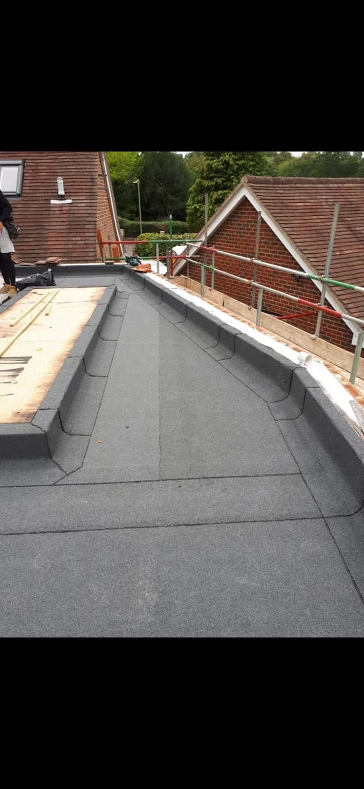

Essential measuring skills for all four roofing disciplines. Learn metric and imperial markings, practise accurate measurements, listen to the recorded lesson and check your knowledge with ten questions before continuing.
An original learning library for people new to traditional built-up felt roofing. These are introductory principles and safety awareness, not practical authorisation to use a torch or work at height.
Submitted project photograph · rooflight and surrounding felt.

Submitted project photograph · parapet and roof edge context.
Important safety notice
Do not treat these notes as a method statement, manufacturer specification, competence assessment or substitute for practical training. UK work at height and hot works can cause serious injury, fire or death. Use competent supervision, suitable risk assessments, appropriate controls and the manufacturer’s current instructions.
User-supplied commercial roof photograph for observation and discussion.Illustrative 3D roof assembly; not a specification.Illustrative roof safety awareness artwork; not a site safety plan.Illustrative tools and PPE; select equipment for assessed hazards.
System compatibility
The waterproofing layer is only one part of an assembly. Check the specified deck, insulation, vapour control, membrane system, perimeter details and documented fire requirements. Products that look alike may not be interchangeable. Record product references and obtain approval for substitutions.
Can similar-looking membranes be freely substituted?
No. Compatibility and the specification must be checked.
Deck and moisture investigation
Distinguish surface condition from structural condition. Record existing roof build-up, signs of movement, moisture indications and previous repairs. Do not assume that visual inspection establishes loading capacity or concealed moisture; escalate uncertainty before specifying work.
Does a dry-looking deck prove it is suitable?
No. A competent assessment and the approved design are required.
Drainage and interfaces
Trace the intended drainage path from high points to outlets. Compare observed low spots, thresholds, rooflights and perimeter transitions with the approved drawings. Photograph anomalies from safe access and avoid drawing conclusions about hidden defects without investigation.
Does a visible ceiling stain locate the leak?
Not necessarily; water may travel through the assembly.
Stop and review
Plan work at height using the hierarchy of controls. Avoid roof access where possible; use suitable collective protection and account for fragile surfaces, weather, access and emergency arrangements. If protection is incomplete, do not proceed.
Is a harness alone a complete safe system?
No; equipment, anchor arrangements, training, rescue and the risk assessment all matter.
Equipment inspection and isolation
Review the appropriate manufacturer manual and site arrangements before using equipment. Check visible damage, accessories, guards and work support. Remove defective tools from use, isolate them safely and report them. Never defeat guards or improvise repairs.
What should happen when a guard is damaged?
Stop using the tool and report it for competent assessment.
Fire risk and hot works
Identify combustible and concealed elements at the survey and design stage. Use the specified safe system and applicable permit arrangements; if risks cannot be controlled, seek an approved flame-free alternative. Follow the site fire emergency arrangements.
Can combustible construction be judged by its outer finish alone?